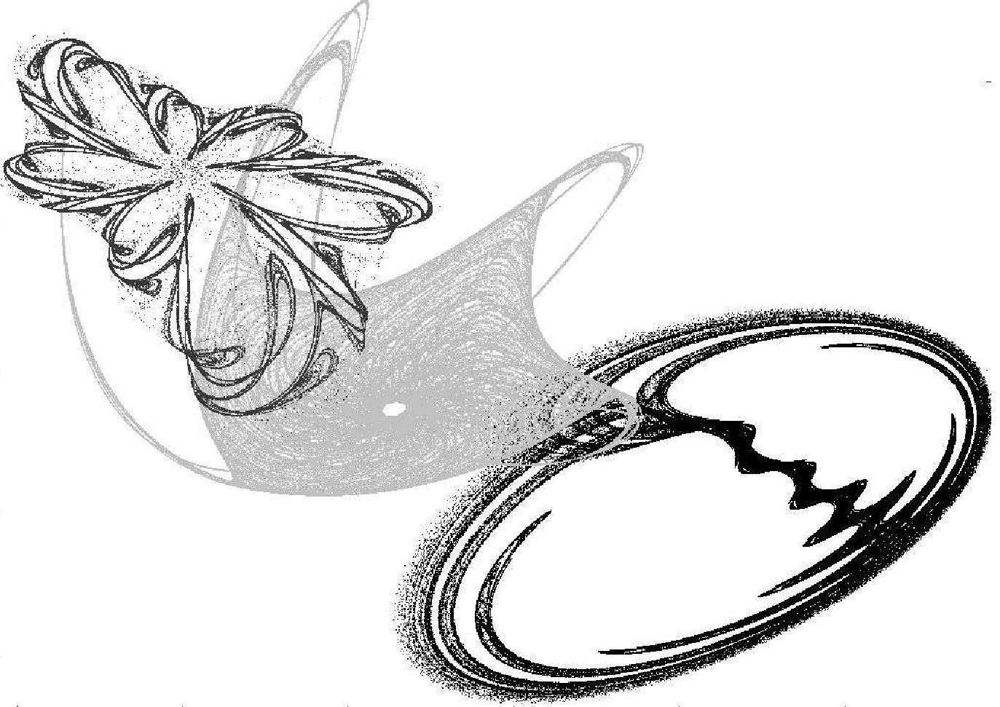

Chaotic Systems Laboratory
The Chaotic Systems laboratory is one of the ten laboratories belonging to Institute of Scientific and Technological Research in Electronics (ICYTE) que depende del Consejo Nacional de Investigaciones Científicas y Técnicas and the National University of Mar del Plata.
The main area of research focuses on the study and implementation of both chaotic systems and the tools and quantifiers that characterize them.
The general objective is to characterize the use of chaotic systems in applications of digital electronics obtaining rules and criteria.

CAMTA
Participation in Conferences.

CASE
Participation in Conferences.
Laboratory
FPGA programming.